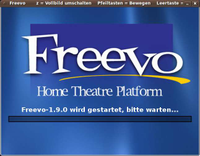
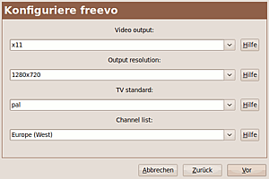
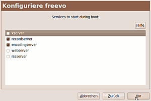
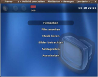

Freevo
Archivierte Anleitung
Dieser Artikel wurde archiviert, da er - oder Teile daraus - nur noch unter einer älteren Ubuntu-Version nutzbar ist. Diese Anleitung wird vom Wiki-Team weder auf Richtigkeit überprüft noch anderweitig gepflegt. Zusätzlich wurde der Artikel für weitere Änderungen gesperrt.
Ausbaufähige Anleitung
Dieser Anleitung fehlen noch einige Informationen. Wenn Du etwas verbessern kannst, dann editiere den Beitrag, um die Qualität des Wikis noch weiter zu verbessern.
Anmerkung: Der Artikel bedarf der Überprüfung, was noch an Konfigurationen vorzunehmen ist. Die Funktion als Record-Server könnte erweitert werden.
Zum Verständnis dieses Artikels sind folgende Seiten hilfreich:

Freevo  ist ein Media-Center-Framework. Es kann sowohl auf dem Arbeits-Rechner eingesetzt werden, als auch auf dem Media-Center-PC, um dort alles mit der Fernbedienung zu steuern.
ist ein Media-Center-Framework. Es kann sowohl auf dem Arbeits-Rechner eingesetzt werden, als auch auf dem Media-Center-PC, um dort alles mit der Fernbedienung zu steuern.
Freevo spielt Filme, Musik, Bilder, Nachrichten von der Festplatte, von DVD/CD, Wechselspeichermedien oder aus dem Internet ab. Für viele weitere Funktionen stehen Plugins zur Verfügung - wie "Internet-Radio", "Wetter", Spiele - die allerdings erst aktiviert werden müssen.
Bitte beachten: Die Beschäftigung mit Freevo ist recht aufwendig und zum Teil knifflig! Freevo setzt die Bereitschaft voraus, sich in viele Bereiche von Linux tief einzuarbeiten. Wer sich ein Media-Center damit aufbauen will, braucht diese Bereitschaft um so mehr. Die Konfiguration von Freevo geschieht durch Editieren von Dateien[5]. Englisch-Kenntnisse sind notwendig, da zur Zeit keine deutsche weiterführende Literatur bekannt ist.
Installation¶
Folgende Pakete müssen installiert werden[1]:
freevo
mplayer (spielt Audio- und Video-Inhalte ab für Freevo. Vgl. MPlayer)
 mit apturl
mit apturl
Paketliste zum Kopieren:
sudo apt-get install freevo mplayer
sudo aptitude install freevo mplayer
Soll eine eine Infrarot-Fernbedienung installiert werden, werden folgende Pakete benötigt:
freevo-lirc (Anbindung an (Python-)Lirc)
python-pylirc (Python-Zugriff auf Lirc)
lirc ("Linux Infrared Remote Control". Vgl. Lirc!)
mit apturl
Paketliste zum Kopieren:
sudo apt-get install freevo-lirc python-pylirc lirc
sudo aptitude install freevo-lirc python-pylirc lirc
Paket-Konfiguration¶
Bei der Installation wird nach Einstellungen gefragt:
 
Allgemeine Konfigurationen, wie sie für den Anfang empfehlenswert wären (diese Einstellungen wirken sich leider nicht aus! Aber sie werden später im Abschnitt freevo.conf wieder auftauchen.):
"Video output" - "x11" für Fensterdarstellung auswählen
"Output resolution" - "800x600" Bevorzugte Fenstergröße, jeder Wert ist erlaubt. (Bei Programmlauf kann auf Vollbild gewechselt werden.)
"TV standard" - "PAL" für den deutschsprachigen Raum
"Channel list" - "Europe (West)" für den deutschsprachigen Raum. Liste der verwendeten Kanal-Frequenzen.
Dienste, die beim Booten gestartet werden sollen. (Diese Einstellungen wirken sich aus!)
"xserver" - Eigene Grafik-Konsole starten (wer unsicher ist, sollte es erst einmal ausgeschaltet lassen!)
"recordserver" - nimmt Fernsehprogramme auf (kodiert sie aber nicht in ein komprimiertes Format)
"encodingserver" - Komprimiert aufgenommene Filme, wenn die TV-Karte nicht schon selbst einen MPEG-Datenstrom liefert.
"webserver" - Freevo kann auch über eine Web-Oberfläche bedient werden. Der Webserver erstellt die Seiten für den Browser.
"rssserver" - Nachrichten können auch ohne den Server gelesen werden.
dpkg-reconfigure¶
Die Einstellungen können später verändert werden, wenn folgender Befehl ausgeführt wird[2][3]:
sudo dpkg-reconfigure freevo
Es erscheinen diesmal nicht die Grafik-Darstellungen, sondern textuelle Menüs. In denen können die selben Einstellungen vorgenommen werden - und noch einige mehr: Es werden Standard-Verzeichnisse angefragt für Filme, Musik, Bilder und Aufnahmen. Hinzu kommen die Überschriften, die anstatt der Verzeichnisse im Freevo-Menü angezeigt werden sollen.
Benutzer freevo¶
Mit dem Paket freevo werden bei der Installation ein neuer Benutzer und eine neue Benutzer-Gruppe angelegt, beide mit dem Namen "freevo". Dieses geschieht, um die System-Dienste von Freevo nicht mit Root-Rechten laufen zu lassen, sie werden mit den Rechten von freevo gestartet.
Gleichzeitig werden unter /home/freevo einige Verzeichnisse angelegt, die dem Benutzer freevo und der Gruppe "freevo" gehören. Die Ubuntu/Debian-Installation geht davon aus, dass alle Benutzer des Rechners ihre Multimedia-Dateien dort ablegen. So sind auch die Verzeichnisse zu verstehen, die vom Rekonfigurierskript (dpkg-reconfigure) des Paketes vorgeschlagen werden. In dem Verzeichnis werden auch temporäre Daten angelegt, etwa Caches oder Fernsehaufnahmen.
Die Zuordnung zur Gruppe "freevo" erfolgt bei der Installation automatisch.
Hinweis:
Teile der hier aufgeführten Konfigurationsarbeiten könnten nicht mehr notwendig sein
Konfiguration¶
Die Konfiguration von Freevo geschieht ausschließlich durch Editieren von Dateien[5]. Eine grafische Oberfläche zum Konfigurieren ist nicht vorgesehen.
Empfehlung: Schrittweise konfigurieren, das es viele Optionen gibt, bei denen man leicht den Überblick verlieren kann.
Im Folgenden ist von zwei Konfigurations-Dateien die Rede: freevo.conf und local_conf.py. Beide Dateien kann es in einer "globalen" und in einer "lokalen" Ausführung geben. Sie liegen in unterschiedlichen Verzeichnissen:
/etc/freevo - Verzeichnis für die globalen Konfigurationsdateien
~/.freevo - Verzeichnis für die lokalen Konfigurationsdateien
Die globalen Dateien gelten für alle Benutzer, die lokalen Dateien gelten nur für den eingeloggten Benutzer.
Freevo sucht jede Datei nacheinander zuerst im lokalen und danach im globalen Verzeichnis. Existiert eine lokale Datei, wird sie geladen und die globale ignoriert. Daraus ergeben sich folgende Möglichkeiten:
Mit den lokalen Konfigurationsdateien kann experimentiert werden, bevor funktionierende Änderungen auf die globalen Dateien übertragen werden.
Man kann eine lokale Konfiguration für sich selbst und eine globale Konfiguration für weitere Benutzer anlegen.
Ist man der einzige Benutzer des Rechners, kann die "Globalisierung" auch einfach unterbleiben.
Empfehlenswert ist die (vorläufige) Verwendung von lokalen Konfigurationsdateien, da man, um diese zu ändern, keine Root-Rechte benötigt, also weniger mit "sudo" hantieren[2] muss.
Im Weiteren wird von diesem Fall ausgegangen.
freevo.conf¶
In einem Terminal aufgerufen[3], erstellt folgender Aufruf die Datei $HOME/.freevo/freevo.conf:
freevo setup
Die Datei wird per Editor angepasst[5]. Insbesondere vier Werte-Zuweisungen sind aus der Paket-Konfiguration bekannt. Diese Einstellungen aus der werden leider nicht übernommen. Hier sind die Einstellungen, wie sie oben bereits vorgeschlagen wurden:
display = x11 geometry = 800x600 tv = pal chanlist = europe-west
Die Datei kann "globalisiert" werden, in dem sie ins globale Konfigurationsverzeichnis /etc/freevo kopiert wird:
sudo cp $HOME/.freevo/freevo.conf /etc/freevo
local_conf.py¶
Die wichtigste Konfigurations-Datei ist local_conf.py. Es ist eigentlich eine Python-Datei und man muss sich an die Python-Syntax halten. [6]
Experten-Info:
local_conf.py wird von Freevo als Python-Datei importiert und aufgerufen. Dabei wurde vorher auf dieselbe Weise die Datei /usr/share/freevo/freevo_config.py aufgerufen, die quasi den gleichen Inhalt hat. Über local_conf.py können Werte überschrieben werden, die in /usr/share/freevo/freevo_config.py vorgegeben wurden.
Zum Anlegen der Datei kann /etc/freevo/local_conf.py.example kopiert werden:
sudo cp /etc/freevo/local_conf.py.example $HOME/.freevo/local_conf.py
MPlayer¶
MPlayer wird von Freevo zum Fernsehen, zum Vorführen von Filmen und Musik-Dateien aufgerufen.
Leider bleibt zunächst der Ton aus! Für den MPlayer muss local_conf.py mit einem Editor angepasst werden, ab Zeile 29:
# E.g.: when you want a alsa as mplayer audio out, just put in local_conf.py: # | MPLAYER_AO_DEV = 'alsa9' MPLAYER_AO_DEV = 'alsa'
Experten-Info:
Wenn MPlayer stumm bleibt - und der Debug-Level von Freevo erhöht wird - erscheint im Terminal auf stderr die Debug-Ausgabe:
[AO OSS] audio_setup: Can't open audio device /dev/dsp: Device or resource busy`
Der Hinweis in local_conf.py auf "alsa9" ist veraltet. MPlayer gibt die Meldung "audio_out: alsa9 and alsa1x modules were removed, use -ao alsa instead." aus.
Laut /usr/share/doc/freevo/README.Debian.gz war eigentlich XINE statt MPlayer vorgesehen, mit Blick auf die freie Lizenz von XINE. Trotzdem wird MPlayer aufgerufen.
Das Menü¶
Im Folgenden wird das Standard-Menü von Freevo beschrieben. 
Fernsehen¶
Fernsehen unter Freevo bedeutet eigentlich, dass ein vollwertiger digitaler Videorecorder mit Livepause-Funktion gstartet wird. Mit Freevo vergleichbare Programme haben nur diese Funktion! (Vgl. TV, VDR, MythTV, Me TV ) Ein digitaler Videorecorder vereinigt verschiedene Funktionen, die einzeln konfiguriert werden: Fernsehen, Programm-Führer (EPG) und die Aufnahme-Steuerung (Record-Server).
Fernseh-Tuner¶
Es gibt verschiedene Tuner-Typen, wie TV-Karten beschreibt. Zunächst sollte man ohne Freevo Fernsehen können! Die Wiki-Seiten TV und TV-Karten helfen dabei. Der Tuner muss in local_conf.py konfiguriert werden. Kommentare dort geben Hinweise auf die Konfiguration.
Fernseh-Kanäle konfigurieren¶
Beim Fernsehen ohne Freevo ist eine Sendertabelle entstanden, die in local_conf.py übertragen werden kann[5]. Jeder Sendereintrag besteht aus drei Teilen:
'channel id' - wird aus TV.xml abgeschrieben.
'display name' - wird in Freevo bei der Senderauswahl angezeigt und darf frei gewählt werden.
'tv channel name' - Kanalname, ersetzt eine Frequenzangabe
Optional kann als viertes eine Angabe über Tageszeiten folgen, an denen der Sender auf dem Kanal zu empfangen ist.
An dieser Stelle kommt die Konfiguration aus freevo.conf ins Spiel, damit werden die Frequenzangaben zu Kanalnamen.
chanlist = europe-west
EPG - Electronic Program Guide¶
Die "Fernsehzeitschrift". (Vgl. TV-Programmführer)
Freevo erwartet den TV-Programmführer im xmltv-Format in der Datei /home/freevo/static/TV.xml. Wie man an die Daten kommt erklärt xmltv.
Wie EPG und Kanaleinstellungen zusammenfinden, soll folgendes Beispiel erläutern. Dabei wird angenommen, TV.xml stamme aus nxtvepg, dann findet man in TV.xml folgenden Eintrag:
<channel id="CNI0DC1"> <display-name>ARD</display-name> </channel>
In local_conf.py wird daraus:
TV_CHANNELS = [ ( 'CNI0DC1', 'Das Erste', 'E10' ) ]
Die 'channel id' wird aus TV.xml übernommen. Der 'display name' darf von TV.xml abweichen. Der 'tv channel name' ist hier ein analoger Kabelkanal.
Record-Server¶
Freevo bringt einen Record-Server mit, der wurde bereits bei der Paket-Konfiguration aktiviert. Neben dem Record-Server wird ein weiterer Server gestartet, der Encoding-Server. Der soll die Video-Daten gleich komprimieren. Wird nicht benötigt, wenn die TV-Karte gleich einen MPEG-Stream liefert. Der Rechner muss laufen, wenn ein Programm aufgenommen wird.
Videos ansehen¶
Freevo (eigentlich der aufgerufene MPlayer) unterstützt viele Video-Formate. Freevo muss nur auf vorhandene Verzeichnisse angesetzt werden, dann werden Filme in diesem Verzeichnis und in seinen Unterverzeichnissen gesucht. In local_conf.py trägt man die gewünschten Verzeichnisse ein. Voreingestellt ist das Verzeichnis /home/freevo/filme vom Benutzer freevo. Will man lieber Filme aus eigenen lokalen Verzeichnissen sehen, muss in local_conf.py der Eintrag "VIDEO_ITEMS" gesucht und aktiviert werden. Beispiel:
VIDEO_ITEMS = [
('Filme', '$HOME/Videos'),
('Video-Ordner', '/home/freevo/filme'),
]Musik hören¶
Das Vorgehen ist das gleiche wie bei Videos ansehen beschrieben. Voreingestellt ist das Verzeichnis /home/freevo/musik vom Benutzer freevo. Eigene Verzeichnisse können in local_conf.py über den Eintrag AUDIO_ITEMS gesucht und aktiviert werden. Beispiel:
AUDIO_ITEMS = [
('Musik', '$HOME/Musik'),
('Audio-Ordner', '/home/freevo/musik'),
]Bilder betrachten¶
Freevo unterstützt viele Bild-Datei-Formate. Es stellt die Bilder in einer Diaschau dar, jedes (Unter-)Verzeichnis für sich. In local_conf.py trägt man die gewünschten Verzeichnisse ein. Voreingestellt ist das Verzeichnis /home/freevo/bilder vom Benutzer freevo. Will man lieber Bilder aus eigenen lokalen Verzeichnissen anschauen, muss in local_conf.py der Eintrag IMAGE_ITEMS gesucht und aktiviert werden. Beispiel:
IMAGE_ITEMS = [
('Bilder', '$HOME/Bilder'),
('Bilderordner', '/home/freevo/bilder'),
]Experten-Info:
Mit dem Debian-Paket wurde mit /etc/freevo/debconf.py eine Konfigurations-Zwischeninstanz geschaffen, die noch vor local_conf.py aufgerufen wird. Dort sind die Voreinstellung zu sehen:
für Videos: "
VIDEO_ITEMS = [ ('Video-Ordner', '/home/freevo/filme') ]"für Audio: "
AUDIO_ITEMS = [ ('Audio-Ordner', '/home/freevo/musik') ]"für Bilddateien: "
IMAGE_ITEMS = [ ('Bilderordner', '/home/freevo/bilder') ]"
Schlagzeilen¶
Freevo kann als RSS-Reader dienen, allerdings nur für fest in local_conf.py eingetragene Feeds. Hierzu dient folgender Eintrag:
HEADLINES_LOCATIONS = [
('Freevo news releases', 'http://sourceforge.net/export/rss2_projnews.php?group_id=46652'),
('Freevo file releases', 'http://sourceforge.net/export/rss2_projfiles.php?group_id=46652'),
('Freevo summary+stats', 'http://sourceforge.net/export/rss2_projsummary.php?group_id=46652'),
('Freevo donors', 'http://sourceforge.net/export/rss2_projdonors.php?group_id=46652'),
('Ubuntuusers.de', 'http://wiki.ubuntuusers.de/_feed/20'),
]Die ersten vier Einträge sind voreingestellte Feeds des Freevo-Projektes. Der fünfte Eintrag ist ein Ubuntuusers-Feed, der auf der Seite http://ubuntuusers.de/feeds/ selbst erstellt wurde. Am besten sucht man den Variablen-Namen HEADLINES_LOCATIONS und editiert den Eintrag nach eigenen Wünschen.
Ausschalten¶
Über den Menü-Punkt "Ausschalten" kann Freevo beendet werden.
Fernbedienung¶
Lirc¶
Zunächst muss man einige Pakete extra installieren (siehe Installation).
Wer eine Fernbedienung an Freevo verwenden will, muss Lirc erst einmal ohne Freevo konfigurieren. Der Artikel Lirc klärt darüber auf, wie die Fernbedienung eingerichtet und getestet wird. Es entsteht dadurch die Konfigurations-Datei von Lirc: /etc/lirc/lircd.conf.
Wie in Lirc beschrieben kann mit dem Befehl "irw" (im Terminal [3]) die Funktion der Fernbedienung getestet werden. Dabei wird am Ende jeder Zeile die erkannte Fernbedienung ausgegeben, diese Info wird gleich gebraucht.
Lirc für Freevo¶
Freevo kann sich an die Lirc-Konfiguration nicht andocken, weil es versucht die Konfigurations-Datei /etc/lirc/lircd.conf zu interpretieren. Lirc setzt hier, wenn keine eigene lirc.conf verwendet wird, nur eine Include-Zeile ein und zeigt so auf eine Datei aus dem Lirc-Fundus. Freevo kommt damit nicht klar. Beispiel-Auszug aus /etc/lirc/lircd.conf:
#Configuration for the Hauppauge TV card remote: include "/usr/share/lirc/extras/more_remotes/hauppauge/lircd.conf.hauppauge"
Die Datei aus der Include-Zeile sei die <INKLUDIERTE_DATEI>. Um Freevo die Arbeit zu ermöglichen, muss die <INKLUDIERTE_DATEI> die Lirc-Konfigurationsdatei ersetzen. Vorher wird die Original-Datei gesichert:
sudo cp /etc/lirc/lircd.conf /etc/lirc/lircd.conf.orig sudo cp <INKLUDIERTE_DATEI> /etc/lirc/lircd.conf
Jetzt kann Freevo an Lirc andocken.
Freevo andocken¶
Im Terminal muss folgendes Kommando gegeben werden[3]. Mit diesem Kommando dockt Freevo an Lirc an. Folgende Ausgaben sind dabei interessant:
sudo freevo makelircrc -w
In der Ausgabe steht, welche Fernbedienung von Freevo erkannt und konfiguriert wurde. Diese muss mit der Augabe von Lirc (also "irw") verglichen werden. Sind sie identisch, ist alles gut. Wenn nicht, ist die irw-Ausgabe die richtige, und muss in Freevo angepasst werden:
sudo freevo makelircrc -w --remote=<MEINE_FERNBEDIENUNG>
Für <MEINE_FERNBEDIENUNG> ist einfach die einzusetzen, die der Lirc-Befehl irw ausgegeben hat (siehe Anfang des Kapitels Lirc).
Experten-Info:
An dieser Stelle ist die Fernbedienung vermutlich größtenteils einsetzbar. Freevo hat die Konfigurationsdatei /etc/freevo/lircrc angelegt, in der die Tastenzuordnungen eingetragen sind.
Der Befehl "freevo makelircrc" in einem Terminal aufgerufen[3] klärt über die Tasten der Fernbedienung auf und darüber welche Freevo zuordnen konnte und welche nicht.
Ggf. ist "freevo makelircrc --remote=<MEINE_FERNBEDIENUNG>" aufzurufen.
Die Konfigurationsdatei /etc/freevo/lircrc kann editiert werden, um weitere Tasten zuzuordnen.
Wie kommt man weiter?¶
Es gibt einige Informationsquellen, die man kennen und auswerten sollte.
Lokal auf dem Rechner¶
"
freevo" im Terminal starten[3] - Dort erscheinen Meldungen, auch Fehlermeldungen.Datei local_conf.py - Viele nützliche Hinweise zu Konfigurationen.
"
freevo --help" im Terminal starten[3] - Viele Information zu den Teilen aus denen es besteht.Datei /usr/share/doc/freevo/README.Debian.gz - Erklärung, wie Debian/Ubuntu sich eine Freevo-Installation vorstellt. Die Vorstellung weicht von der der Freevo-Mannschaft ab!
Verzeichnis /usr/share/doc/freevo/install/ - HTML-Seiten mit weiteren Installations-Anleitungen
Verzeichnisse /usr/share/freevo/ und /usr/share/pyshared/freevo/- Haupt-Installations-Verzeichnisse mit Python-Dateien von Freevo
Debug- und Logging-Ausgaben¶
Debug-Modus einschalten. Dazu folgende Zeilen in local_conf.py ganz am Ende hinzufügen. Dort befinden sich auch Hinweise auf die Debug- und Logging-Einstellungen.
DEBUG = 1 DEBUG_CHILDAPP = 1 LOGGING = logging.DEBUG LOGGING_RECORDSERVER = logging.DEBUG
Ab jetzt sammeln sich Text-Dateien im Verzeichnis $HOME/.freevo/log an, mit interessanten Informationen über die Abläufe innerhalb von Freevo.

- Erstellt mit Inyoka
-
 2004 – 2017 ubuntuusers.de • Einige Rechte vorbehalten
2004 – 2017 ubuntuusers.de • Einige Rechte vorbehalten
Lizenz • Kontakt • Datenschutz • Impressum • Serverstatus -
Serverhousing gespendet von